📈 TrendDo
LLM
React
XAI
OpenAI
Selected research and development projects.
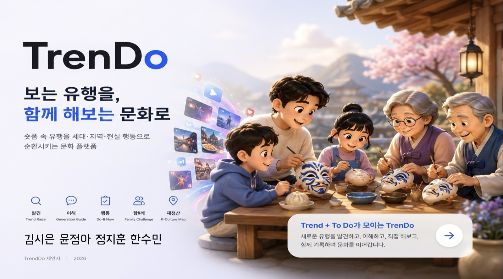
TrendDo는 숏폼·알고리즘 안에서 빠르게 소비되고 사라지는 유행을 세대별 언어로 번역하고, 실제로 해볼 수 있는 ToDo 챌린지와 지역·전통문화 경험으로 전환하는 AI 문화 순환 플랫폼입니다.
"알고리즘은 사람을 더 오래 보게 만들지만, 문화는 더 깊게 경험되게 만들지 못한다." — TrendDo는 이 간극을 좁히는 4단계 루프를 제공합니다.
provenance_label=demo_seed로 기록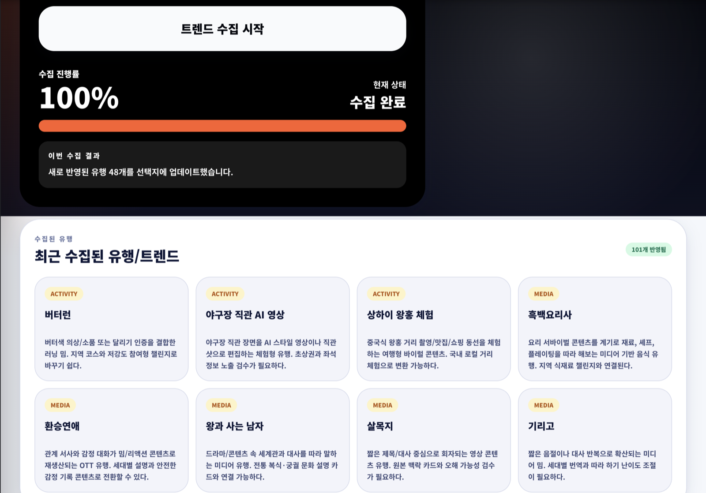
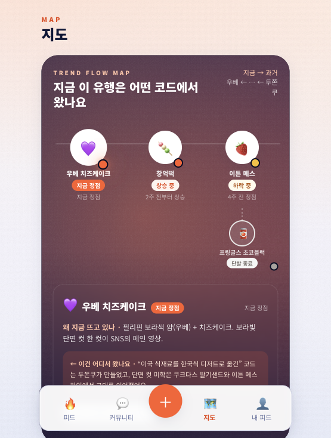
4인 팀 프로젝트 — 김시은 · 윤정아 · 정지훈 · 한수민
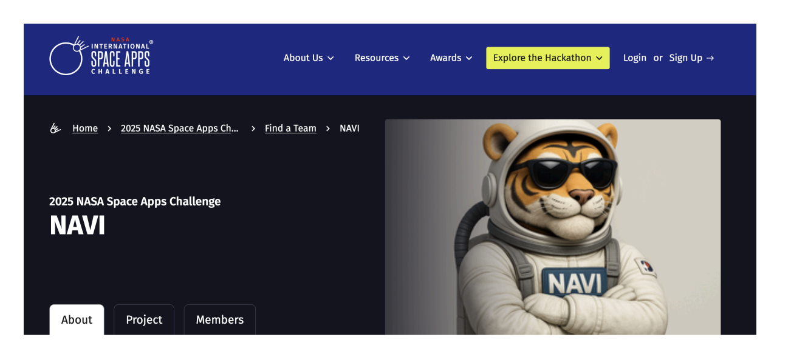
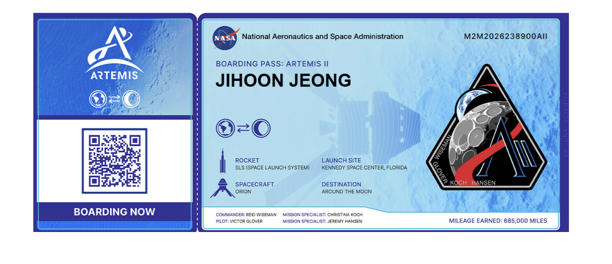
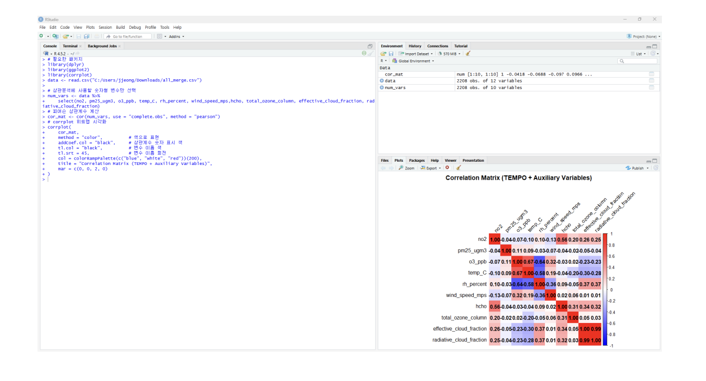
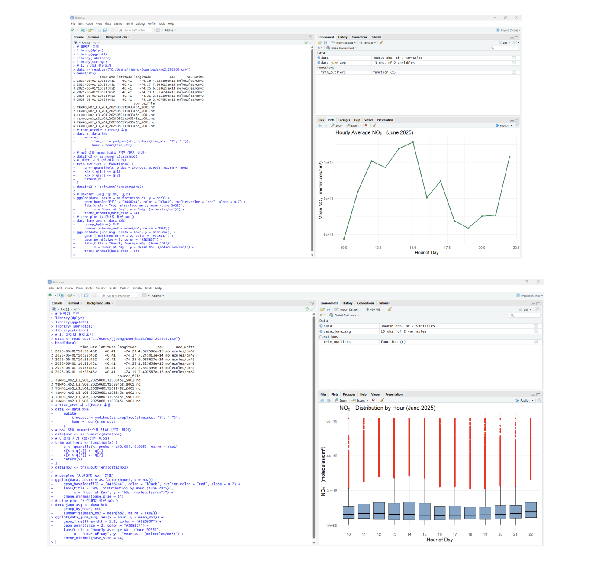
AIRBENDER is an AI-powered air quality forecasting system leveraging NASA TEMPO satellite data to predict ozone levels and provide personalized health recommendations.
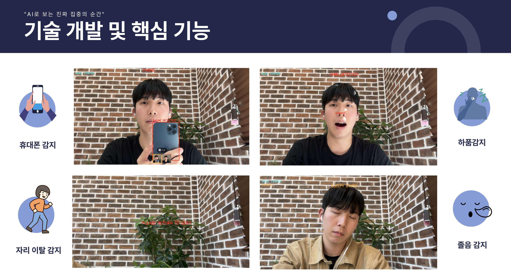
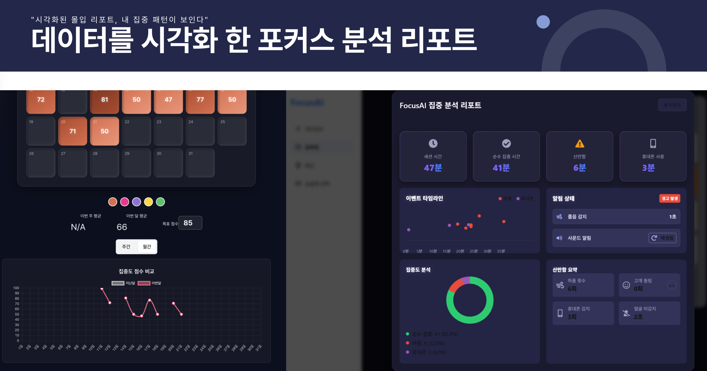
FocusAI analyzes learner concentration in real time by detecting facial expressions and behaviors in intelligent learning environments.
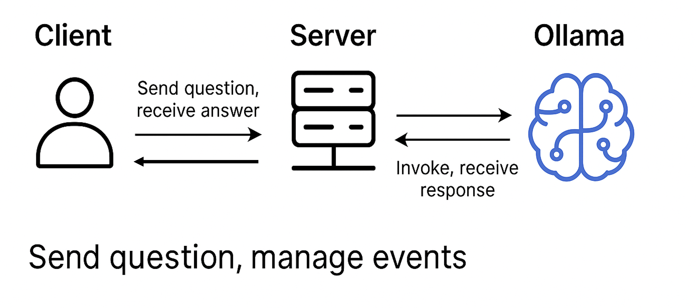
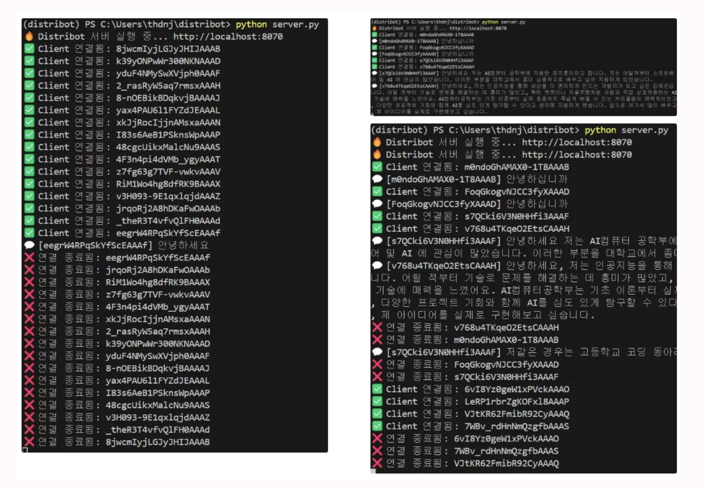
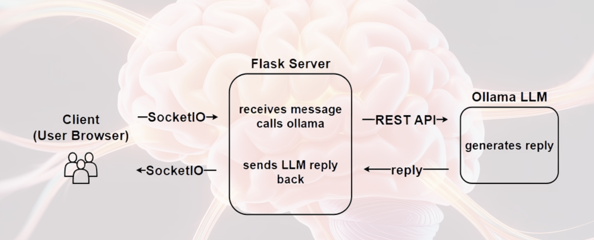
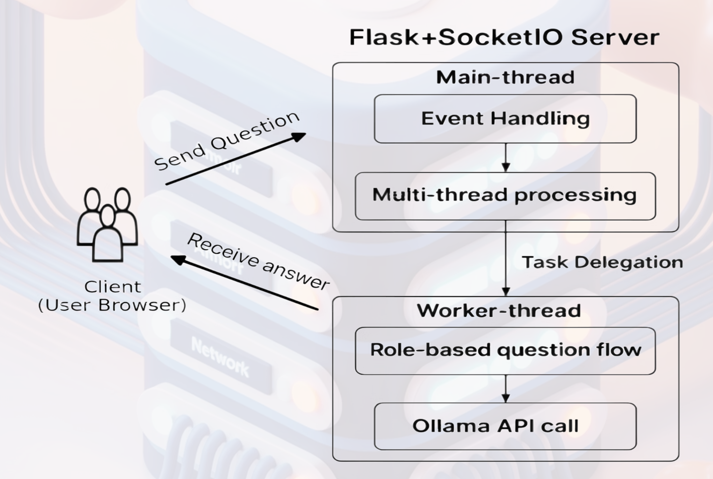
Distribot is a scalable, multi-user interview simulation system powered by large language models.
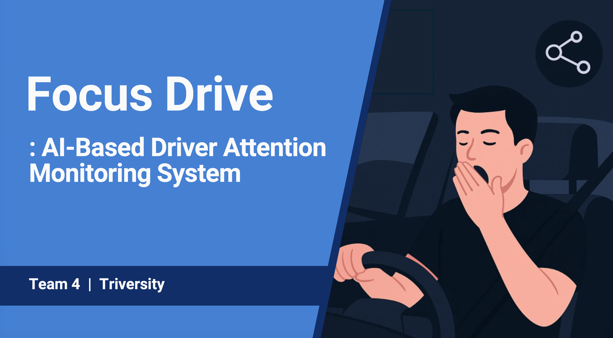
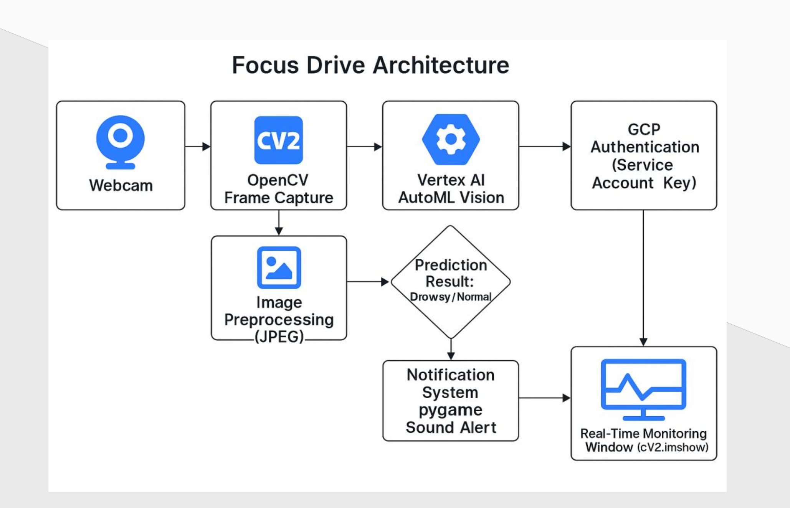
FocusDrive detects driver drowsiness in real time using webcam input and triggers immediate alerts.